绘画 / 张丰玲
《传承龙脉 筑阳光未来》
以龙、东方建筑和花卉意象连接传统与未来，画面明亮而有向上的力量。
EDUCATION / STUDENT WORKS
这些作品来自课堂与参赛项目中的创作实践。学生们从传统文化、城市记忆、时代精神和个人想象出发，用绘画、平面设计与立体造型表达自己对世界的观察。
SELECTED WORKS
这里不只是作品陈列，也是一段段学习痕迹：从构图、色彩、材料到主题表达，每件作品都保留着学生在创作中理解文化、回应时代、寻找个人语言的过程。
返回教育探索
绘画 / 张丰玲
以龙、东方建筑和花卉意象连接传统与未来，画面明亮而有向上的力量。

绘画 / 钟颖
以神兽、古建和少年形象构成理想图景，展现传统文化与当代梦想的交汇。
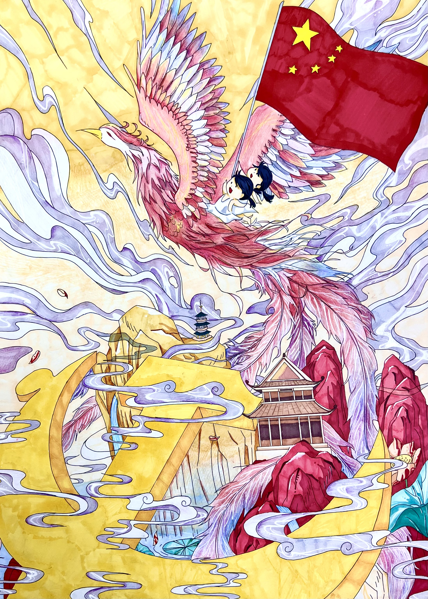
绘画 / 江一诺
用凤凰、国旗和山河意象表达青春逐梦的热烈情绪。
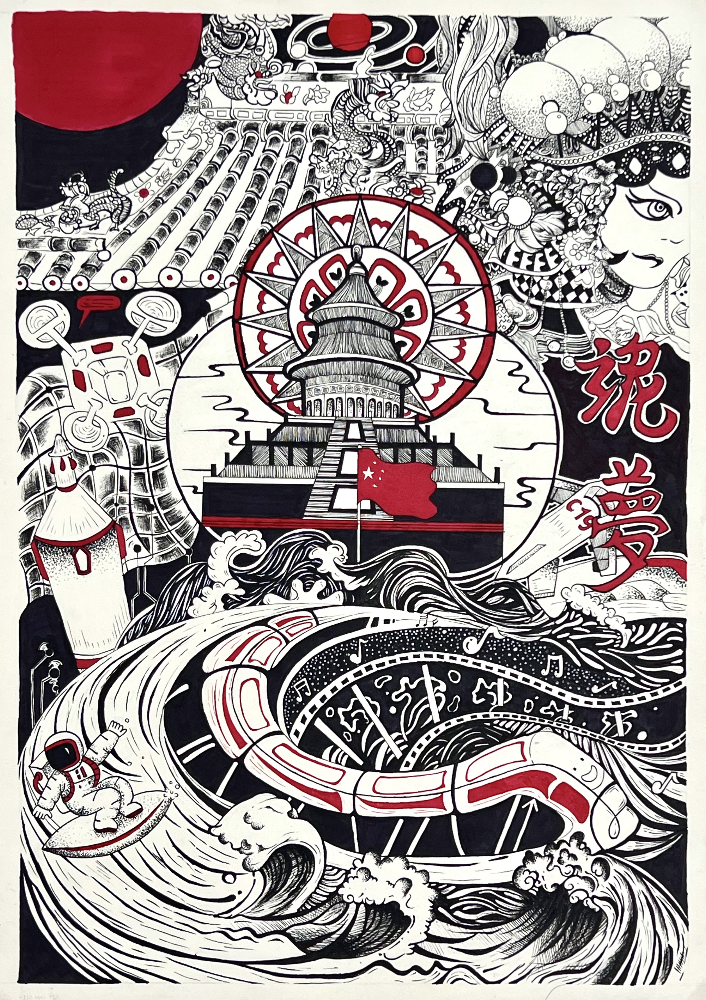
绘画 / 郭品希
黑、白、红的强烈对比，把戏曲、建筑和梦想主题融为一体。
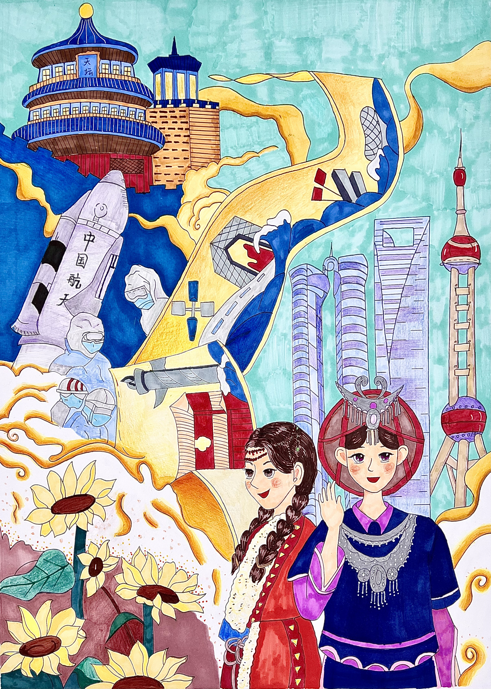
绘画 / 李旌瑜
以城市、航天和民族元素组合成充满节奏感的梦想叙事。
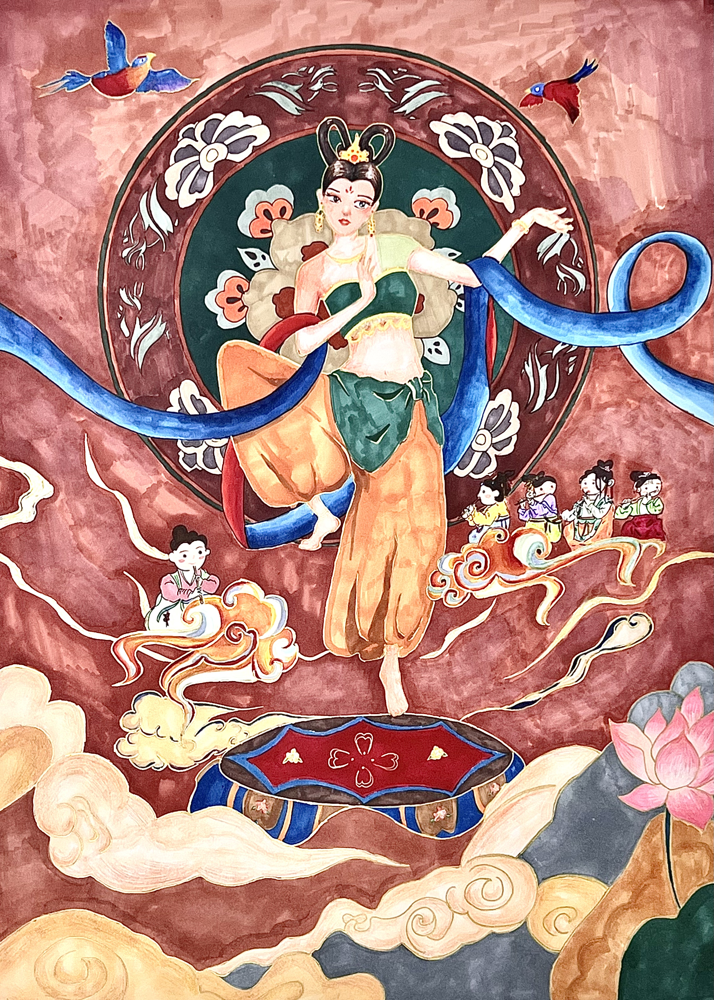
绘画 / 王星懿
舞蹈与城市意象交织，呈现青春向阳生长的视觉张力。
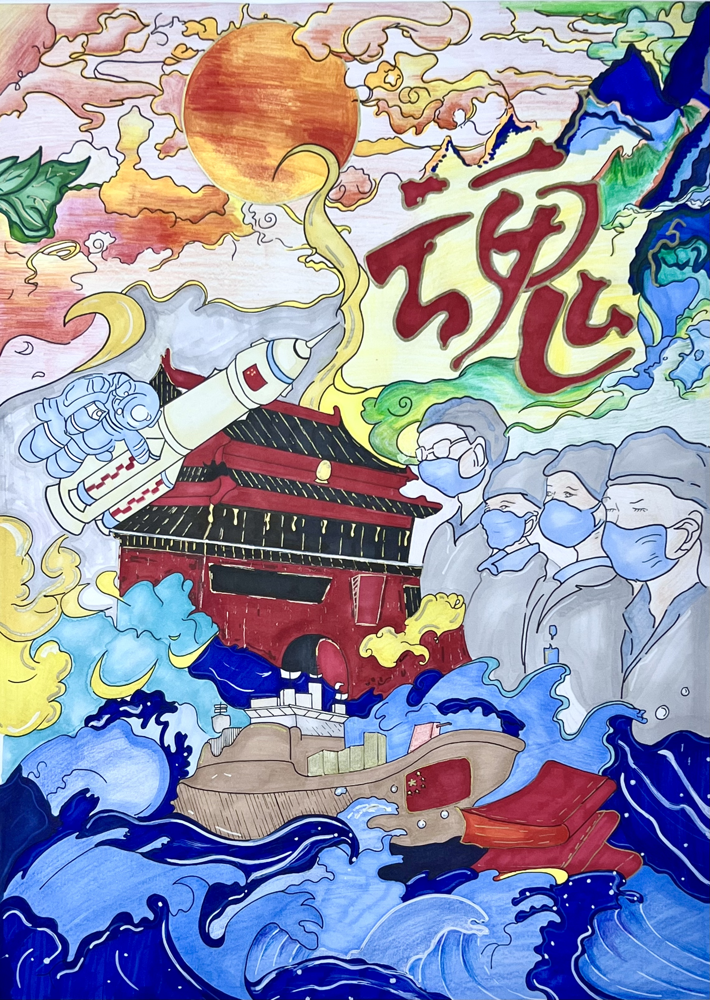
绘画 / 林昱含
以浪潮、航天与时代人物为线索，表达穿越困境后的希望。
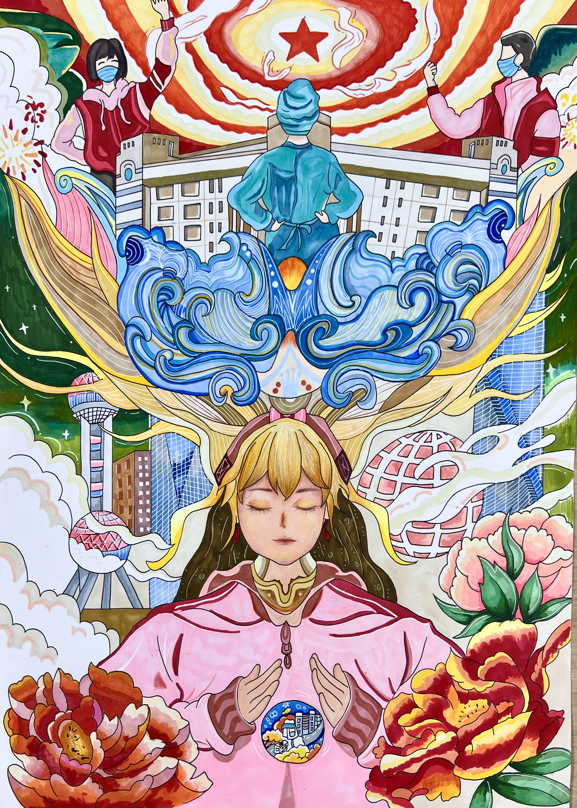
绘画 / 庄紫婷
向日葵、城市和人物共同构成温暖的成长图像。
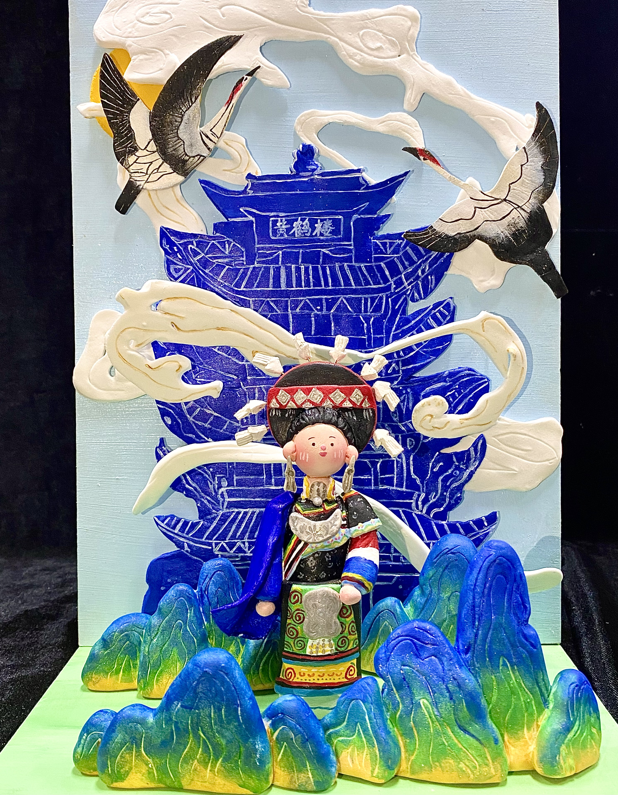
绘画 / 李依恬
以人物与民族文化元素展开叙事，画面具有鲜明的色彩和地域气质。
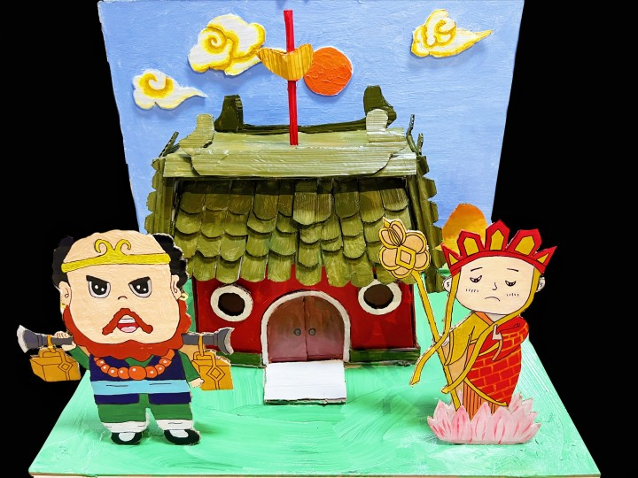
立体造型 / 王非凡
通过立体结构把经典人物与建筑场景组合成具有童趣的舞台。

立体造型 / 江晨璐
莲花、塔楼和飞天形象形成层次丰富的立体叙事。
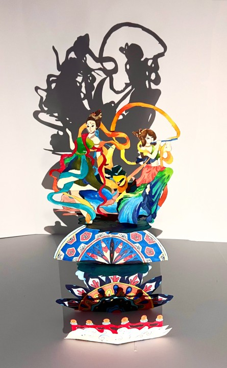
立体造型 / 陈贞颖
以敦煌色彩和剪影结构呈现丝路文化的光影感。
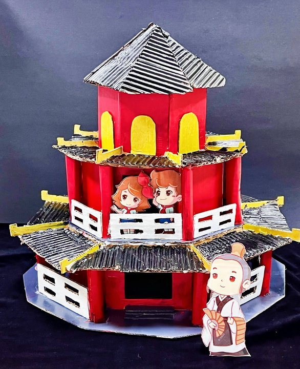
立体造型 / 杨茜淑
建筑与人物并置，让传统故事在立体空间中重新相遇。
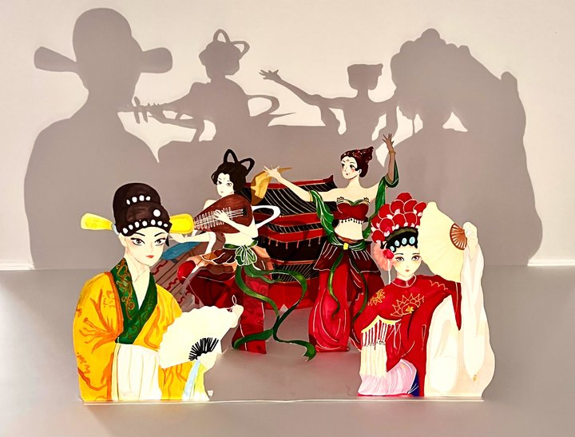
立体造型 / 黄枝琴
用高低错落的结构表达回望与前行之间的连接。

平面设计 / 陈映里
以黑色背景与光束构建强烈象征，表达突破阴霾的力量。
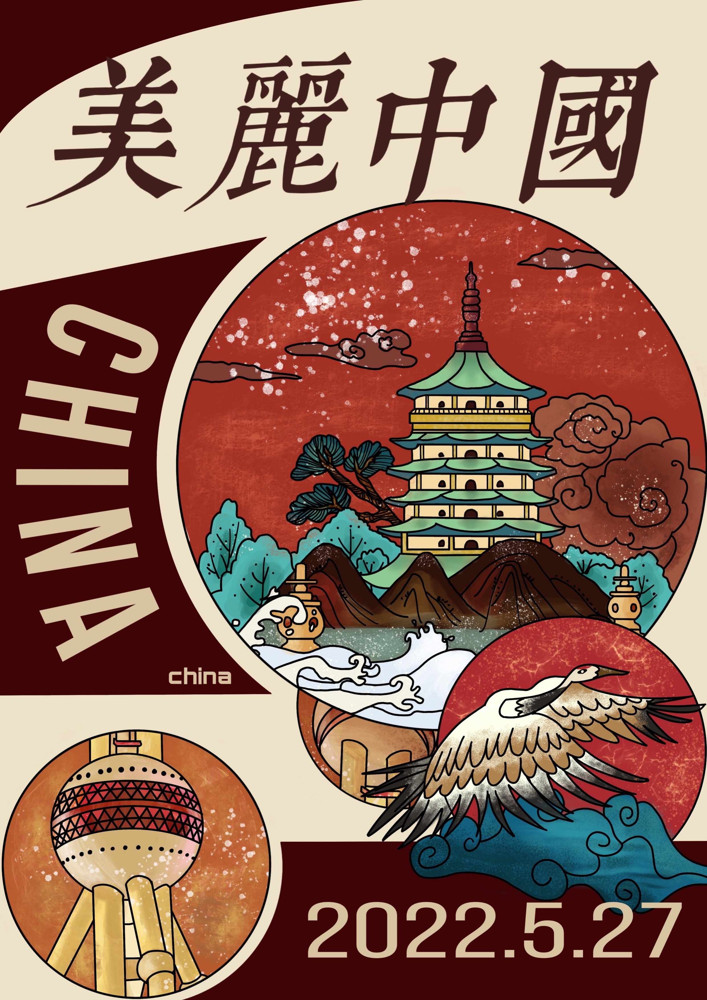
平面设计 / 陈映里
以城市明信片式构图呈现中国意象，让风景成为面向世界的视觉语言。